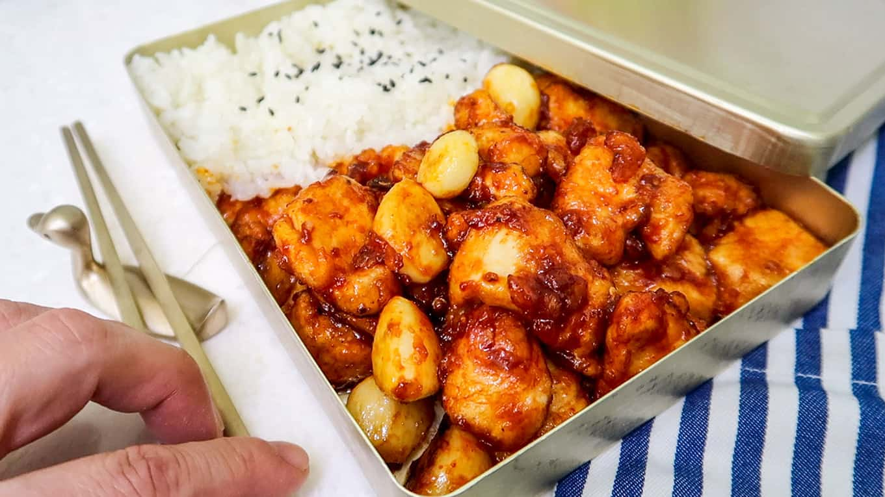

Description
Dakgangjeong is a Korean-style fried chicken that's normally glazed in sweet and tangy soy sauce or spicy gochujang sauce.
Traditionally, Dakgangjeong is fried but for this recipe it's just coated with flour but never deep-fried with oil.
Ingredients:
- 2 Chicken breasts
- 1/2 Whole Cheonyang Chili Pepper
- 15-20 Cloves Garlic
- 3-4 Tablespoons Water
- 1/4 Cup Water
Chicken Pre-Seasoning
- 1/2 Tablespoon Minced Garlic
- 1 Tablespoon Mirin
- 2 Pinches Salt
- Few cracks black pepper
Spicy Marinade Glaze
- 1 Tablespoon Soy Sauce
- 1 Tablespoon Gochujang
- 1 Tablespoon Ketchup
- 1 Tablespoon Oligodang
Instructions:
Pre-season chicken
- Chop chicken breasts into bite-sized pieces
- Place the chicken pieces into a mixing bowl. Add Minced Garlic (½ Tablespoon), Mirim (1 Tablespoon), Salt (few pinches), Black Pepper (few cracks). Mix it all together with your hands. Then set it aside for at least 15-20 minutes.
Make Spicy Marinade Glaze
- Dice ½ a chili pepper into small pieces.
- Take out a bowl and mix: Soy Sauce (1 Tablespoon), Gochujang Paste (1 Tablespoon), Ketchup (1 Tablespoon), Oligodang Syrup or Honey (1 Tablespoon). Give a thorough mix.
- Add-in the diced chili pepper to the marinade as well. Then give a final mix.
Prep Garlic
- Cut-off the stem parts from the garlic cloves. If there are any large cloves, cut them in half as well.
Coat Chicken
- Place the marinated chicken pieces into a plastic or Ziploc bag. Add in Starch Powder (3-4 Tablespoons). Twist the bag and give it a thorough shake. Make sure all the pieces get an even coating.
Make Dakgangjeong
- Place the frying pan on a MEDIUM heat. Once the pan is hot, place in the water (¼ cup). Then add in the garlic cloves. Stir-fry around until the water in the pan evaporates.
- Once the water is almost gone, reduce to a MEDIUM-LOW heat (important!)
- Move the garlic cloves to one side. Add some vegetable oil in - not too much.
- Now add the chicken pieces onto the frying pan (you can add a few more dashes of oil as needed).
- Let the chicken pieces fry until they start to get golden browning on one side. Then use a spatula and stir-fry the chicken around until they get cooked through.
- Now add in the spicy marinade sauce. Stir-fry the chicken in the spicy glaze until it is well coated (about 1 minute!)
- Bon Appetit y'all - Serve with Rice!